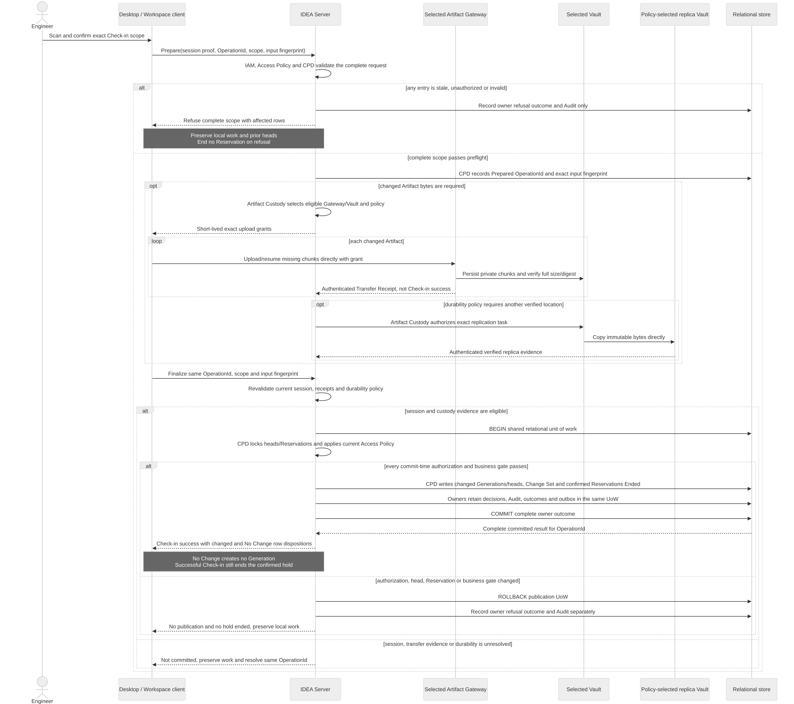

Atomic Check-in publication
ARCH-VIEW-SEQ-002 — The engineer confirms the exact scope after a local scan. Server-owned Identity, Access Policy and Controlled Product Data perform preflight. Changed bytes go directly from the Desktop Workspace client through a selected Gateway to private Vault staging. Artifact Custody validates authenticated receipts and any required replica evidence. Finalize uses the same OperationId and scope. Current authorization, heads, Reservations and durability are revalidated before one relational owner transaction commits changed Generations, Audit, outcomes and confirmed Reservations Ended. No Change creates no Generation but still ends the confirmed hold. Refusal or known pre-commit failure preserves local work and the prior product baseline. Internal owner calls are detailed in the companion Module and authorization views.
